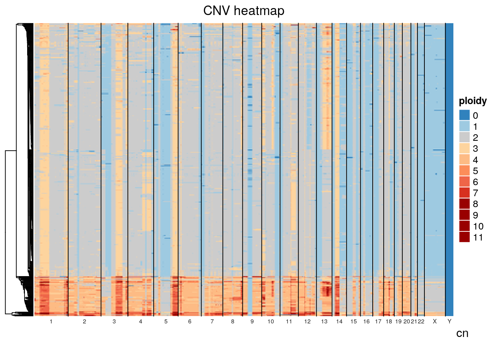
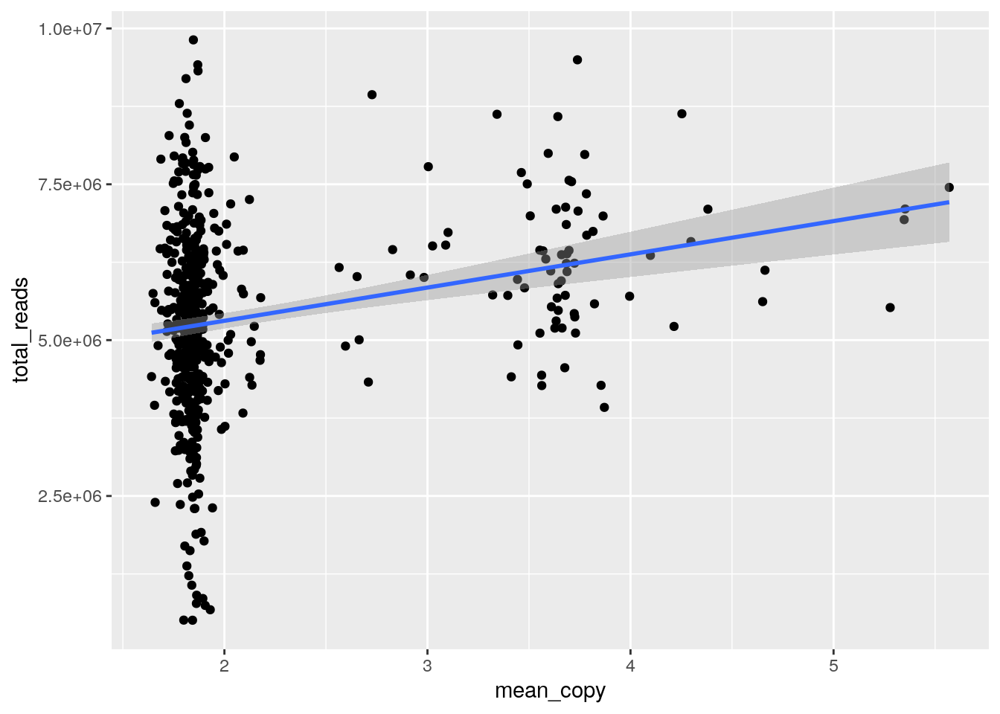
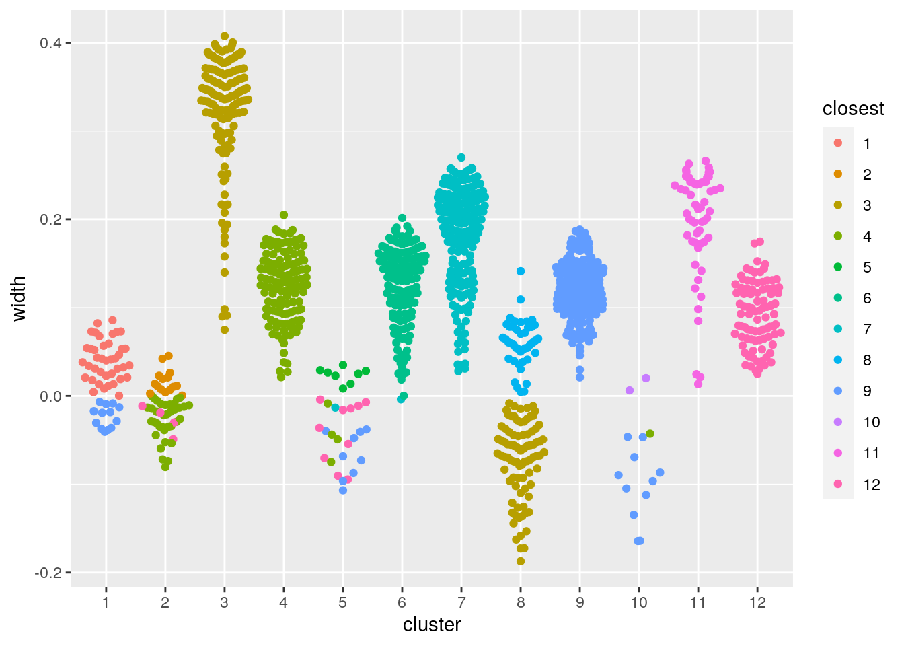
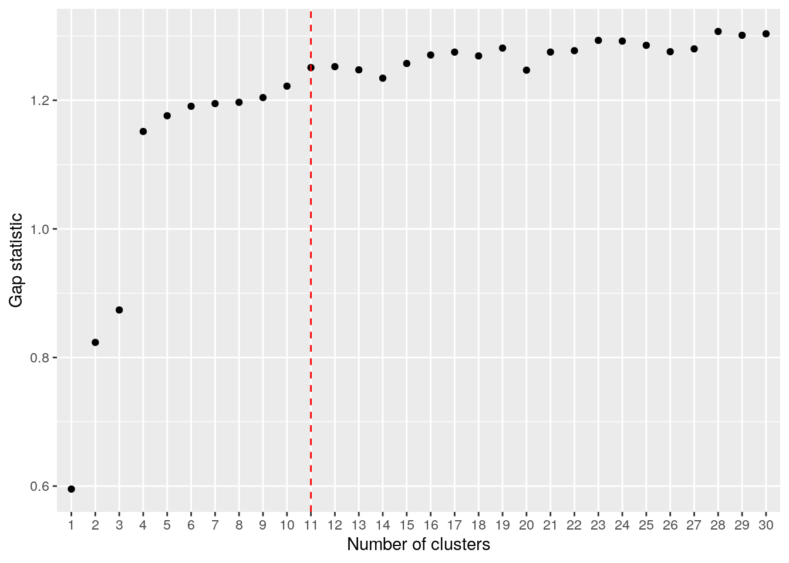
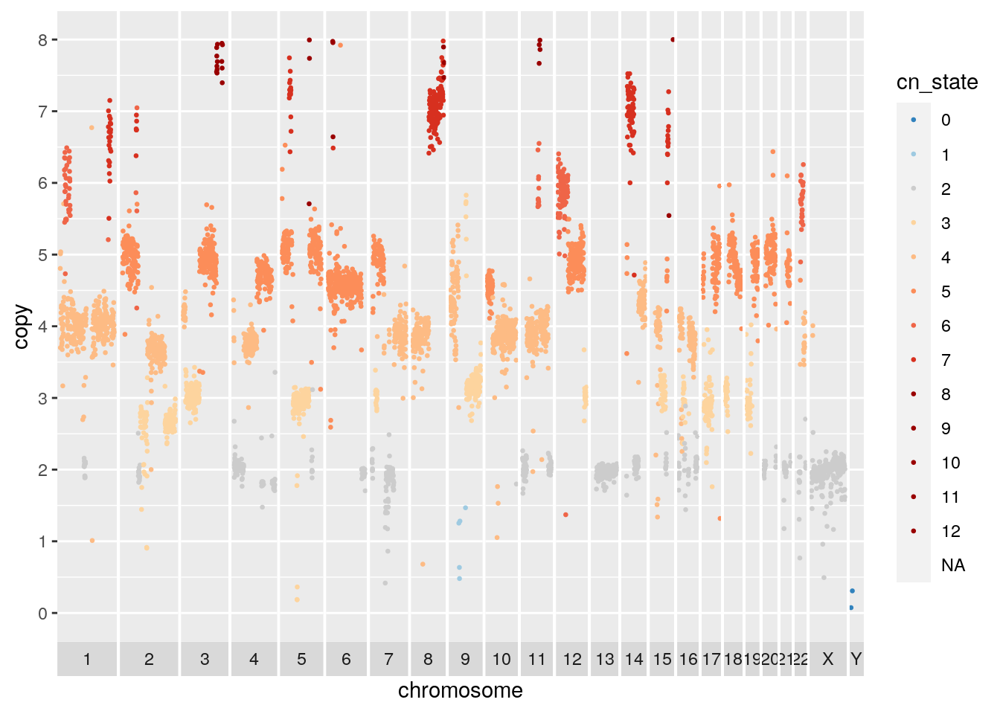
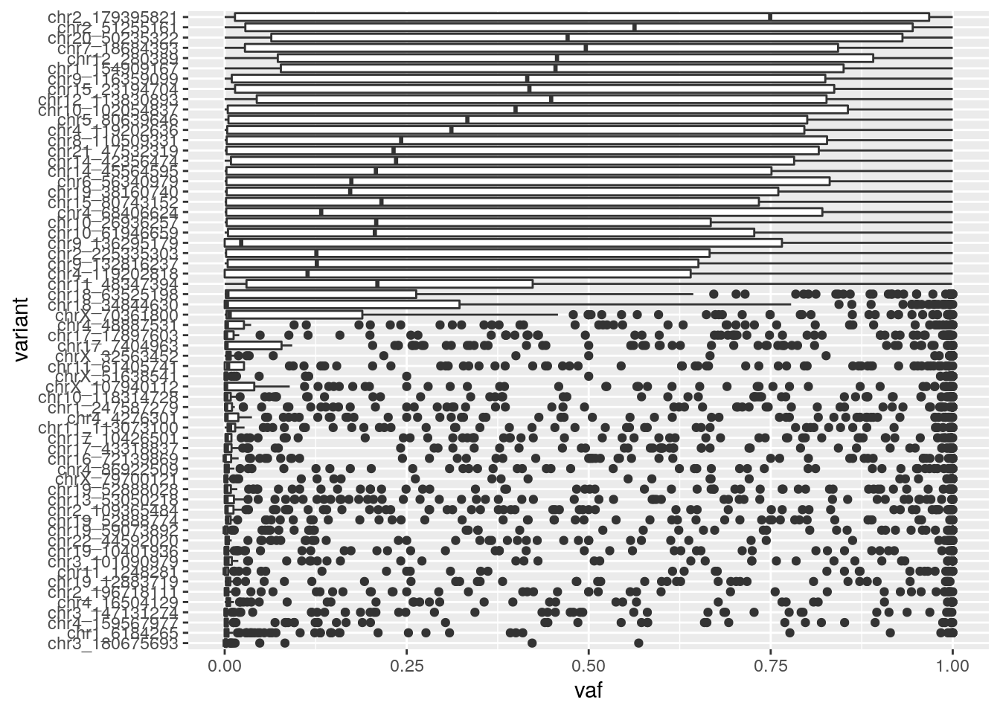
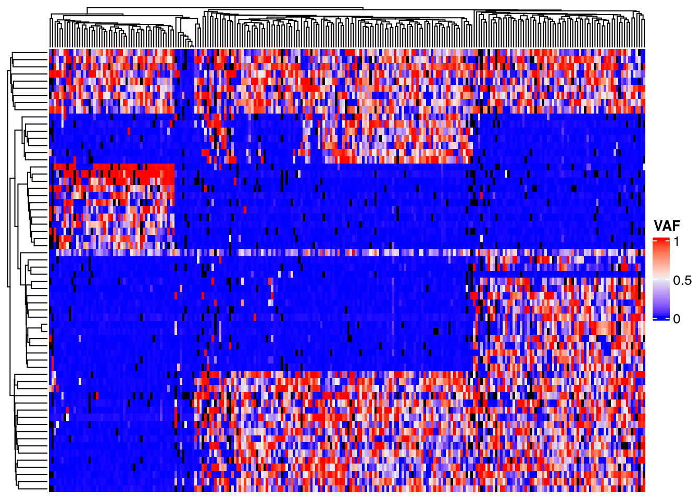
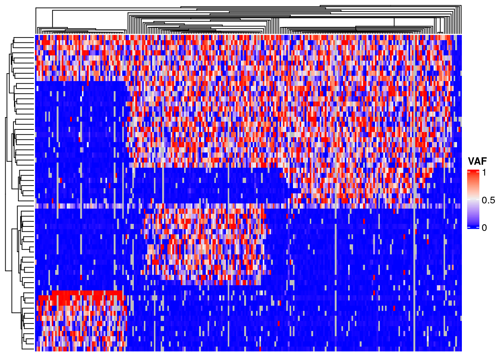

Chapter 2 Introduction
You can label chapter and section titles using {#label} after them, e.g., we can reference Chapter 2. If you do not manually label them, there will be automatic labels anyway, e.g., Chapter ??.
Figures and tables with captions will be placed in figure and table environments, respectively.
Figure 2.1: Here is a nice figure!
Reference a figure by its code chunk label with the fig: prefix, e.g., see Figure 2.1. Similarly, you can reference tables generated from knitr::kable(), e.g., see Table 2.1.
| Sepal.Length | Sepal.Width | Petal.Length | Petal.Width | Species |
|---|---|---|---|---|
| 5.1 | 3.5 | 1.4 | 0.2 | setosa |
| 4.9 | 3.0 | 1.4 | 0.2 | setosa |
| 4.7 | 3.2 | 1.3 | 0.2 | setosa |
| 4.6 | 3.1 | 1.5 | 0.2 | setosa |
| 5.0 | 3.6 | 1.4 | 0.2 | setosa |
| 5.4 | 3.9 | 1.7 | 0.4 | setosa |
| 4.6 | 3.4 | 1.4 | 0.3 | setosa |
| 5.0 | 3.4 | 1.5 | 0.2 | setosa |
| 4.4 | 2.9 | 1.4 | 0.2 | setosa |
| 4.9 | 3.1 | 1.5 | 0.1 | setosa |
| 5.4 | 3.7 | 1.5 | 0.2 | setosa |
| 4.8 | 3.4 | 1.6 | 0.2 | setosa |
| 4.8 | 3.0 | 1.4 | 0.1 | setosa |
| 4.3 | 3.0 | 1.1 | 0.1 | setosa |
| 5.8 | 4.0 | 1.2 | 0.2 | setosa |
| 5.7 | 4.4 | 1.5 | 0.4 | setosa |
| 5.4 | 3.9 | 1.3 | 0.4 | setosa |
| 5.1 | 3.5 | 1.4 | 0.3 | setosa |
| 5.7 | 3.8 | 1.7 | 0.3 | setosa |
| 5.1 | 3.8 | 1.5 | 0.3 | setosa |
You can write citations, too. For example, we are using the bookdown package (Xie 2021) in this sample book, which was built on top of R Markdown and knitr (Xie 2015).
2.1 Introduction
In this tutorial we will analyze the OV2295 cell line DLP data from the paper “Clonal Decomposition and DNA Replication States Defined by Scaled Single-Cell Genome Sequencing”, Laks et al. (2019) https://doi.org/10.1016/j.cell.2019.10.026. The OV2295 cell lines were generated from a primary, metastasis and relapse specimens obtained from a patient with high grade serous ovarian cancer (see Létourneau et al. (2012), https://doi.org/10.1186/1471-2407-12-379). The cell lines have a high degree of genomic instability, and significant genomic heterogeneity including with respect to large chromosomal changes. The data from the Laks et al. paper is deposited in zenodo (https://doi.org/10.5281/zenodo.3445364).
2.2 Load the required packages
This tutorial will rely heavily on the tidyverse packages including ggplot2. Heatmap plotting will use ComplexHeatmap and manipulation of genomic segment data will be done with GenomicRanges.
2.3 Read and QC the copy number data
This data is available from zenodo and can be downloaded with:
wget "https://zenodo.org/record/3445364/files/ov2295_cell_cn.csv.gz"
wget "https://zenodo.org/record/3445364/files/ov2295_cell_metrics.csv.gz"
The data was analyzed using the DLP single_cell_pipeline: https://github.com/shahcompbio/single_cell_pipeline.
We will first read the metrics data, assess the quality of the cells and filter where necessary. The metrics file provided by the many columns but we will focus on quality and total_reads for filtering. Quality is calculated using a classifier trained on manually curated cell quality calls and uses many of the other metrics as features.
## # A tibble: 6 x 55
## cell_id unpaired_mapped_r… paired_mapped_rea… unpaired_duplicat… paired_duplicate_… unmapped_reads percent_duplicate…
## <chr> <dbl> <dbl> <dbl> <dbl> <dbl> <dbl>
## 1 SA922-A9055… 70068 2462814 19418 711792 352397 0.290
## 2 SA922-A9055… 49767 2723310 19848 701345 588432 0.261
## 3 SA922-A9055… 1113 5605 198 70 1261949 0.0281
## 4 SA922-A9055… 113421 5554326 44742 1636879 905778 0.297
## 5 SA922-A9055… 1054 20043 25 608 567186 0.0319
## 6 SA922-A9055… 1545 30598 171 1752 1469497 0.0605
## # … with 48 more variables: estimated_library_size <dbl>, total_reads <dbl>, total_mapped_reads <dbl>,
## # total_duplicate_reads <dbl>, total_properly_paired <dbl>, coverage_breadth <dbl>, coverage_depth <dbl>,
## # median_insert_size <dbl>, mean_insert_size <dbl>, standard_deviation_insert_size <dbl>, index_sequence <chr>,
## # column <dbl>, img_col <dbl>, index_i5 <chr>, sample_type <chr>, primer_i7 <chr>, experimental_condition <chr>,
## # index_i7 <chr>, cell_call <chr>, sample_id <chr>, primer_i5 <chr>, row <dbl>, library_id <chr>, index <dbl>,
## # multiplier <dbl>, MSRSI_non_integerness <dbl>, MBRSI_dispersion_non_integerness <dbl>, MBRSM_dispersion <dbl>,
## # autocorrelation_hmmcopy <dbl>, cv_hmmcopy <dbl>, empty_bins_hmmcopy <dbl>, mad_hmmcopy <dbl>,
## # mean_hmmcopy_reads_per_bin <dbl>, median_hmmcopy_reads_per_bin <dbl>, std_hmmcopy_reads_per_bin <dbl>,
## # total_mapped_reads_hmmcopy <dbl>, total_halfiness <dbl>, scaled_halfiness <dbl>, mean_state_mads <dbl>,
## # mean_state_vars <dbl>, mad_neutral_state <dbl>, breakpoints <dbl>, mean_copy <dbl>, state_mode <dbl>,
## # log_likelihood <dbl>, true_multiplier <dbl>, quality <dbl>, order <dbl>Plot a scatterplot of quality by total reads with marginals on the axes. The cloud of cells with significant read count and quality less than 0.75 are cells for which we cannot effectively predict copy number. These cells could either be cycling, or for which the genomic DNA degraded significantly prior to sequencing, or for which tagmentation failed.
The plots in this notebook will be using ggplot extensively. I recommend the r4ds tutorials (https://r4ds.had.co.nz/data-visualisation.html) and the ggplot cheat sheet (https://github.com/rstudio/cheatsheets/blob/master/data-visualization-2.1.pdf) for further reference.
p <- metrics %>%
ggplot(mapping = aes(x=quality, y=total_reads)) +
geom_point() +
theme(legend.position = "left")
ggMarginal(p, type="histogram")
Filter reads based on a quality threshold of 0.85 and a total read count threshold of 500k reads. Also filter control cells based on the experimental_condition and sample_id columns.
metrics <- metrics %>% filter(
quality >= 0.85,
total_reads > 500000,
!(experimental_condition %in% c("GM", "gDNA")),
sample_id %in% c("SA1090", "SA921", "SA922"))Read in the copy number data. Using vroom::vroom will significantly speed up data loading and using factors for chr and cell_id and ignoring irrelevant columns will reduce the memory footprint.
cn <- vroom(
'ov2295_cell_cn.csv.gz',
col_types = cols(
chr = col_factor(NULL),
cell_id = col_factor(NULL)
),
col_select = c(
chr,
start,
end,
reads,
copy,
state,
cell_id
)
)Subset copy number data by the filtered cell ids in the metrics table.
## # A tibble: 6 x 8
## chr start end reads copy state cell_id sample_id
## <fct> <dbl> <dbl> <dbl> <dbl> <dbl> <chr> <chr>
## 1 1 1 500000 22 NA 5 SA922-A90554B-R28-C09 SA922
## 2 1 500001 1000000 609 NA 5 SA922-A90554B-R28-C09 SA922
## 3 1 1000001 1500000 752 4.57 5 SA922-A90554B-R28-C09 SA922
## 4 1 1500001 2000000 672 3.47 5 SA922-A90554B-R28-C09 SA922
## 5 1 2000001 2500000 931 5.57 5 SA922-A90554B-R28-C09 SA922
## 6 1 2500001 3000000 794 NA 5 SA922-A90554B-R28-C09 SA9222.4 Copy number exploration
We will plot cells using a scatter plot of normalized binned read count data. The data has been processed through HMMCopy analysis as part of the DLP single cell pipeline. The state column contains the prediction of integer copy number state for each cell. The copy column is raw read count normalized for ploidy, gc, and mappability. We will plot copy on the y axis and color by state, and wrap the plotting code in a function for use below.
plot_profile <- function(cn) {
cn.colors <- c(rev(brewer.pal(n = 3, "Blues"))[1:2], "#CCCCCC", tail(brewer.pal(n = 8, "OrRd"), 6))
cn.colors <- c(cn.colors, cn.colors[c(9, 9, 9, 9)])
names(cn.colors) <- 0:12
cn %>%
mutate(cn_state = factor(state, names(cn.colors))) %>%
mutate(chr = factor(chr, levels = c(1:22, "X", "Y"))) %>%
ggplot() +
geom_point(mapping = aes(x = start, y = copy, colour = cn_state), size = 0.5) +
facet_grid(~chr, scales = "free_x", space="free_x", switch = "x") +
theme(panel.spacing = unit(0.05, "cm")) +
scale_x_continuous(breaks = c()) +
scale_color_manual(values = cn.colors, labels = names(cn.colors), drop = FALSE) +
scale_y_continuous(breaks = seq(0, 8, by = 1), limit = c(0, 8)) +
xlab('chromosome')
}
plot_cell <- function(cn, plot_cell_id) {
filter(cn, cell_id == plot_cell_id) %>% plot_profile()
}The first cell we will plot is a near diploid cell with some amplified regions and many LOH regions including chromosome 17. The chromosome 17 LOH overlaps with a deliterious TP53 mutation, as is typical of high grade serous ovarian cancers.
## Warning: Removed 740 rows containing missing values (geom_point). A second cell from the same cell line appears to be baseline tetraploid. Many of the amplified or deleted regions overlap with those of the diploid baseline cell. Copy 3 regions on chromosome 2 and 15 support the tetraploid solution.
A second cell from the same cell line appears to be baseline tetraploid. Many of the amplified or deleted regions overlap with those of the diploid baseline cell. Copy 3 regions on chromosome 2 and 15 support the tetraploid solution.
## Warning: Removed 762 rows containing missing values (geom_point).
It will be useful to plot all cells together in a heatmap for a high level look at the heterogeneity. Here we rely on the very useful ComplexHeatmap package. The plot takes a GenomicRanges object with columns as cells and rows as regions. A nice tutorial on GenomicRanges can be found here. The plot will use hierarchical clustering to order the cells and provide a summary of the similarity between groups of cells.
plot_heatmap <- function(gr, dist_method = "euclidean"){
#' plot a heatmap with chromosome boundaries
#' the order of the rows can be customized here
#' its a simple distance based clustering
#'
#' Adapted from code published by Velazquez-Villarreal et al. (2020):
#' https://www.nature.com/articles/s42003-020-1044-8
#'
#' Uses the very useful ComplexHeatmap package:
#' https://jokergoo.github.io/ComplexHeatmap-reference/book/
gr <- GenomeInfoDb::sortSeqlevels(gr)
gr <- sort(gr)
mat <- as.matrix(GenomicRanges::mcols(gr))
mat <- t(mat)
hr <- hclust(get_dist(mat, method = dist_method), method = "average")
hr = as.dendrogram(hr)
# chromosome boundaries and midpoints for annotation
chr_ids = GenomicRanges::seqnames(gr)@values
chr_lengths = GenomicRanges::seqnames(gr)@lengths
chr_props = chr_lengths / length(gr)
mids = cumsum(chr_props) - (chr_props / 2)
boundaries = cumsum(chr_props)
boundaries = boundaries[1:length(boundaries)-1]
abline_x = rep(boundaries, each=2)
abline_y <- rep(c(0,1), times=length(boundaries))
abline_ids <- rep(1:length(boundaries),each=2)
#annotation to label chromosomes
ha_column = ComplexHeatmap::HeatmapAnnotation(cn = function(index) {
grid.text(chr_ids,x=mids,y=1,just = c("center", "top"),gp=gpar(col="#202020",fontsize=6))
})
# the main heatmap
cn.colors <- c(rev(brewer.pal(n = 3, "Blues"))[1:2], "#CCCCCC", tail(brewer.pal(n = 8, "OrRd"), 6))
cn.colors <- c(cn.colors, cn.colors[c(9, 9, 9, 9)])
names(cn.colors) <- 0:12
hm <- ComplexHeatmap::Heatmap(
matrix = mat,
name = "ploidy",
col = cn.colors,
cluster_rows = hr,
cluster_columns = FALSE,
show_row_names = FALSE,
bottom_annotation = ha_column,
column_title = "CNV heatmap",
use_raster = TRUE,
)
ComplexHeatmap::draw(hm, row_dend_side = "left")
ComplexHeatmap::decorate_heatmap_body("ploidy", {
grid.polyline(
x = abline_x,
y = abline_y,
id = abline_ids,
gp = gpar(lty = 1, lwd = 1))
})
}Plotting SA1090 (the primary sample), we can see that there are two major groups, a baseline diploid and a baseline tetraploid group. Both groups harbour additional heterogeneity. Looking closely, it appears that many of the patterns that distinguish populations within the diploid group are also found in the tetraploid group.
gr <- cn %>%
filter(sample_id == "SA1090") %>%
dplyr::select(chr, start, end, state, cell_id) %>%
pivot_wider(names_from = cell_id, values_from = state) %>%
GenomicRanges::makeGRangesFromDataFrame(keep.extra.columns=TRUE,ignore.strand=TRUE)
plot_heatmap(gr)
The default distance method for generating the hierarchical clustering was eucldean, which will naturally result in large distances between diploid and tetraploid cells. Alternative distance methods can be specified, see the get_dist function from factoextras. If we use pearson correlation as the distance method, we see significant mixing of the diploid and tetraploid populations indicating that tetraploidization is occuring independently and sporadically throughout the population.

If we plot total_reads by mean_copy (average ploidy) there appears to be a relationship, likely due to the fact that tetraploid cells will have twice the DNA available and take up more sequencing realestate. Classifying diploid and tetraploid, the difference in mean total_reads is highly significant, further evidence the tetraploid cells are truly tetraploid. Some cells classified as diploid may in fact be tetraploid with a perfect doubling of all chromosomes though this would be difficult to determine without orthogonal experiments. Note that we havent ruled out doublets with certainty.
metrics %>%
filter(sample_id == "SA1090") %>%
ggplot(aes(x=mean_copy, y=total_reads)) + geom_point() +
geom_smooth(method='lm', formula= y~x)
metrics %>%
filter(sample_id == "SA1090") %>%
mutate(is_polyploid = mean_copy > 2.5) %>%
ggplot(aes(x=is_polyploid, y=total_reads)) + geom_boxplot() +
stat_compare_means(label.x = 1.3)
2.5 Clustering
In order to further understand the population structure we can cluster the cells by their copy number profiles. It is worth noting that for some datasets, clustering is inappropriate. If the population of cells is continuously evolving and accruing neutral copy number changes, the cells will lie on a continuum of copy number change. Any maximal set of related cells could be considered a ‘cluster’ if a copy number change exists specific to that set of cells. In such a case phylogenetic representation is more appropriate. However, in many real datasets sets of cells will cluster due to either selection having favoured the expansion of some cell populations and the extinction of others.
We will first cluster the cells using k-means. Independent segmentation of each cell using HMMCopy can produce small differences in segment boundaries that may affect clustering. We will thus cluster based on the raw copy number (‘copy’ column) instead of the HMMCopy state. Start by creating a matrix of raw copy number values, filtering bins with NaNs in any cell and scaling the data to allow clustering of cells with dissimilar ploidy.
gr <- cn %>%
dplyr::select(chr, start, end, copy, cell_id) %>%
pivot_wider(names_from = cell_id, values_from = copy) %>%
GenomicRanges::makeGRangesFromDataFrame(keep.extra.columns=TRUE,ignore.strand=TRUE)
# Remove bins with any nan across any cell
gr <- gr[complete.cases(GenomicRanges::mcols(gr))]
# Create matrix, remove bins that are nan across any cells
mat <- as.matrix(GenomicRanges::mcols(gr))
# Optionally normalize the copy number, this will group cells regardless of ploidy
mat <- scale(mat)
mat <- t(mat)We will then use PCA to transform the data to a reduced dimensionality representation. In bin level copy number data, many of the bins will be highly correlated especially with neighboring bins subject to the same copy number change. PCA will effectively compress multiple correlated bins into a single dimension. Working with the top PCA components will be desirable because it decreases the computational burden of downstream computation (ie clustering) and reduces noise by averaging across multiple bins. PCA can be run using the prcomp function:
It can be informative to plot the PCA loadings of the top components. The loadings for a given component represent how much each bin contributes to that component. Large positive or negative values indicate a strong positive or negative correlation of the bin with the component respectively. Values close to 0 indicate the bin is uncorrelated with the component. The PCA loading plot can be helpful in identifying problematic noisy bins. These bins will show up as isolated spikes in the PCA loading plot. The first PCA plotted below looks unproblematic. Try setting the value of a bin to 1000 for a subset of cells and redoing the PCA to see the effect.
pc = "PC1"
gr.pca <- granges(gr)
GenomicRanges::mcols(gr.pca) <- list(PC=mat.pca$rotation[, pc])
GenomicRanges::as.data.frame(gr.pca) %>%
tibble() %>%
dplyr::rename(chr=seqnames) %>%
ggplot() +
geom_point(mapping = aes(x = start, y = PC), size = 0.5) +
facet_grid(~chr, scales = "free_x", space="free_x", switch = "x") +
theme(panel.spacing = unit(0.05, "cm")) +
scale_x_continuous(breaks = c()) +
xlab('chromosome')
Now run k-means on the first 50 PCs. Use 12 cluster centers and 100 restarts and set a seed for consistency.
set.seed(42)
clust.kmeans <- kmeans(mat.pca$x[, 1:50], centers=12, nstart=100)
clust <- clust.kmeans$clusterUMAP is a non-linear dimensionality reduction technique favoured for its ability to preserve much of the structure of the data in a 2-D plot. We can use UMAP to visualize the clustering.
mat.umap <- umap(mat)
mat.umap.tbl <- tibble(x=mat.umap$layout[,1], y=mat.umap$layout[,2], cluster=factor(clust))
ggplot(mat.umap.tbl) + geom_point(aes(x=x, y=y, color=cluster))
We can also assess the clustering using the silhouette method. Briefly, the silhouette width statistic is calculated based on the mean distance of a datapoint to every other datapoint in the same cluster, and the mean distance to datapoints in the next closest cluster. A silhouette width less than 0 could indicate the cell may be better assigned to a different cluster, the cell is an outlier, or the data are not spherically distributed around cluster centers.
sil.approx <- approxSilhouette(mat, clusters=clust)
sil.data <- as.data.frame(sil.approx)
sil.data$closest <- factor(ifelse(sil.data$width > 0, clust, sil.data$other))
sil.data$cluster <- factor(clust)
ggplot(sil.data, aes(x=cluster, y=width, colour=closest)) +
ggbeeswarm::geom_quasirandom(method="smiley")
We used k=12 cluster centers somewhat arbitrarily. Many strategies exist for selecting an appropriate value for k. For instance, we could use the gap statistic to select an optimal k as shown below. The optimal number of clusters suggested by this method may be less than expected reflecting the issues with clustering, especially k-means clustering, on this type of data. Generally speaking, differences between sub-populations will vary widely in scale with some populations well separated by large copy number changes and other derivative populations differing only by a few changes.
## Clustering k = 1,2,..., K.max (= 30): .. done
## Bootstrapping, b = 1,2,..., B (= 100) [one "." per sample]:
## .................................................. 50
## .................................................. 100best.k <- maxSE(gaps$Tab[,"gap"], gaps$Tab[,"SE.sim"])
as_tibble(gaps$Tab) %>% mutate(k=factor(1:30)) %>%
ggplot() +
geom_point(aes(x=k, y=gap)) +
geom_vline(xintercept=best.k, col="red", lwd=0.5, lty=2) +
xlab("Number of clusters") +
ylab("Gap statistic")
Alternative clustering approaches are possible, see this excellent scRNA tutorial for ideas. A graph based clustering approach such as that illustrated below could work better for clustering copy number data as graph based methods will not favour spherical clusters.
# graph based clustering
set.seed(42)
g <- buildSNNGraph(t(mat.pca$x[, 1:50]), k=10, type="number")
clust <- igraph::cluster_walktrap(g)$membership
table(clust)
# umap plot
mat.umap <- umap(mat)
mat.umap.tbl <- tibble(x=mat.umap$layout[,1], y=mat.umap$layout[,2], cluster=factor(clust))
ggplot(mat.umap.tbl) + geom_point(aes(x=x, y=y, color=cluster))
# silhouette width evaluation
sil.approx <- approxSilhouette(mat, clusters=clust)
sil.data <- as.data.frame(sil.approx)
sil.data$closest <- factor(ifelse(sil.data$width > 0, clust, sil.data$other))
sil.data$cluster <- factor(clust)
ggplot(sil.data, aes(x=cluster, y=width, colour=closest)) +
ggbeeswarm::geom_quasirandom(method="smiley")In order to visualize the cluster copy number, lets modify our heatmap plotting function to take in a clustering, order the rows by each cell’s cluster label, and annotate the clusters on the left side of the heatmap.
plot_cluster_heatmap <- function(gr, clust){
#' plot a heatmap with chromosome boundaries
#' the order of the rows can be customized here
#' its a simple distance based clustering
#'
#' Adapted from code published by Velazquez-Villarreal et al. (2020):
#' https://www.nature.com/articles/s42003-020-1044-8
#'
#' Uses the very useful ComplexHeatmap package:
#' https://jokergoo.github.io/ComplexHeatmap-reference/book/
gr <- GenomeInfoDb::sortSeqlevels(gr)
gr <- sort(gr)
sorted_clust = sort(clust)
mat <- as.matrix(GenomicRanges::mcols(gr))
mat <- t(mat)
mat <- mat[names(sorted_clust),]
# chromosome boundaries and midpoints for annotation
chr_ids = GenomicRanges::seqnames(gr)@values
chr_lengths = GenomicRanges::seqnames(gr)@lengths
chr_props = chr_lengths / length(gr)
mids = cumsum(chr_props) - (chr_props / 2)
boundaries = cumsum(chr_props)
boundaries = boundaries[1:length(boundaries)-1]
abline_x = rep(boundaries, each=2)
abline_y <- rep(c(0,1), times=length(boundaries))
abline_ids <- rep(1:length(boundaries),each=2)
# annotation to label chromosomes
ha_column = ComplexHeatmap::HeatmapAnnotation(cn = function(index) {
grid.text(chr_ids,x=mids,y=1,just = c("center", "top"),gp=gpar(col="#202020",fontsize=6))
})
# cluster annotation
cluster_colors = rainbow(length(unique(sorted_clust)))
names(cluster_colors) = unique(sorted_clust)
ha_row = ComplexHeatmap::rowAnnotation(cluster = factor(sorted_clust), col = list(cluster = cluster_colors))
# the main heatmap
cn.colors <- c(rev(brewer.pal(n = 3, "Blues"))[1:2], "#CCCCCC", tail(brewer.pal(n = 8, "OrRd"), 6))
cn.colors <- c(cn.colors, cn.colors[c(9, 9, 9, 9)])
names(cn.colors) <- 0:12
hm = ComplexHeatmap::Heatmap(
matrix = mat,
name = "ploidy",
col = cn.colors,
cluster_rows = FALSE,
cluster_columns = FALSE,
show_row_names = FALSE,
bottom_annotation = ha_column,
left_annotation = ha_row,
column_title = "CNV heatmap",
use_raster = TRUE,
)
ComplexHeatmap::draw(hm)
ComplexHeatmap::decorate_heatmap_body("ploidy", {
grid.polyline(
x = abline_x,
y = abline_y,
id = abline_ids,
gp = gpar(lty = 1, lwd = 1))
})
}gr <- cn %>%
dplyr::select(chr, start, end, state, cell_id) %>%
pivot_wider(names_from = cell_id, values_from = state) %>%
GenomicRanges::makeGRangesFromDataFrame(keep.extra.columns=TRUE,ignore.strand=TRUE)
plot_cluster_heatmap(gr, clust)
We can also merge cell copy number data by cluster to show aggregate cluster level copy number.
clust.df <- enframe(clust.kmeans$cluster) %>%
dplyr::rename(cell_id = name, cluster = value)
clust.sizes <- enframe(table(clust.df$cluster)) %>%
dplyr::rename(cell_id = name, size = value) %>%
filter(size >= 10)
cn_clust <- cn %>%
inner_join(clust.df) %>%
group_by(chr, start, end, cluster) %>%
summarize(copy = mean(copy), state = median(state))## Joining, by = "cell_id"## `summarise()` has grouped output by 'chr', 'start', 'end'. You can override using the `.groups` argument.## Warning: Removed 806 rows containing missing values (geom_point).
## Warning: Removed 959 rows containing missing values (geom_point).
## Warning: Removed 915 rows containing missing values (geom_point).
There appears to be a deletion on chromosome 5. Navigate here to see why: http://genome.ucsc.edu/cgi-bin/hgTracks?db=hg19&lastVirtModeType=default&lastVirtModeExtraState=&virtModeType=default&virtMode=0&nonVirtPosition=&position=chr5%3A67500000%2D72000002&hgsid=1117136619_dGtW3EEOeJAIG6cYbSGFZwGwyLzb
## GRanges object with 18 ranges and 0 metadata columns:
## seqnames ranges strand
## <Rle> <IRanges> <Rle>
## [1] 5 69000001-69500000 *
## [2] 5 69000001-69500000 *
## [3] 5 69000001-69500000 *
## [4] 5 69000001-69500000 *
## [5] 5 69000001-69500000 *
## ... ... ... ...
## [14] 5 69500001-70000000 *
## [15] 5 70000001-70500000 *
## [16] 5 70000001-70500000 *
## [17] 5 70000001-70500000 *
## [18] 5 70000001-70500000 *
## -------
## seqinfo: 24 sequences from an unspecified genome; no seqlengthsFinally, lets look at the gene content of some of the high level amplifications. First read in a list of known oncogenic amplified genes from the cancer gene census. Read hg19 genes from TxDb.Hsapiens.UCSC.hg19.knownGene and be careful to rename chromosomes, ie “chr9” -> “9”. Add gene symbols from org.Hs.egSYMBOL.
cencus.amps <- read_csv('./Census_ampThu\ Apr\ 16\ 15_35_36\ 2020.csv') %>%
dplyr::rename(symbol = `Gene Symbol`)##
## ── Column specification ────────────────────────────────────────────────────────────────────────────────────────────────────
## cols(
## `Gene Symbol` = col_character(),
## Name = col_character(),
## `Entrez GeneId` = col_double(),
## `Genome Location` = col_character(),
## Tier = col_double(),
## `Tumour Types(Somatic)` = col_character(),
## Synonyms = col_character()
## )# read human genes, normalize chromosome names
human.genes <- genes(TxDb.Hsapiens.UCSC.hg19.knownGene)## 403 genes were dropped because they have exons located on both strands of the same reference sequence or on
## more than one reference sequence, so cannot be represented by a single genomic range.
## Use 'single.strand.genes.only=FALSE' to get all the genes in a GRangesList object, or use suppressMessages()
## to suppress this message.human.genes <- renameSeqlevels(human.genes, sub("chr", "", seqlevels(human.genes)))
# add gene symbol from org.Hs.egSYMBOL
GenomicRanges::mcols(human.genes) <- tibble(gene_id=human.genes$gene_id) %>%
left_join(tibble(as.data.frame(org.Hs.egSYMBOL)))## Joining, by = "gene_id"# subset by cancer gene cencus amps
cencus.amps.genes <- human.genes[(elementMetadata(human.genes)[,'symbol'] %in% cencus.amps$symbol)]Filter copy number for high level events, then subset by overlap with gene regions. The SOX2 gene is amplified.
subset.gr <- cn_clust %>% filter(copy > 10) %>% makeGRangesFromDataFrame(keep.extra.columns=TRUE,ignore.strand=TRUE)
subset.genes <- subsetByOverlaps(cencus.amps.genes, subset.gr)
subset.genes## GRanges object with 1 range and 2 metadata columns:
## seqnames ranges strand | gene_id symbol
## <Rle> <IRanges> <Rle> | <character> <character>
## 6657 3 181429712-181432223 + | 6657 SOX2
## -------
## seqinfo: 93 sequences (1 circular) from hg19 genomeOverlapping the SOX2 region with all cluster copy number we find that SOX2 is subclonally amplified.
all.gr <- cn_clust %>% makeGRangesFromDataFrame(keep.extra.columns=TRUE,ignore.strand=TRUE)
subsetByOverlaps(all.gr, subset.genes) %>%
as_tibble() %>%
ggplot() + geom_col(aes(x=factor(cluster), y=copy))
2.6 Introduction
In this tutorial we will analyze targeted single cell sequencing data from a patient with Acute Lymphoblastic Leukemia. The data was generated as part of a study of six ALL patients (see Gawad et al.). The data we will analyze corresponds to “Patient 3” from that paper. The data was also reanalyzed by Singer et al. to showcase their novel phylogenetic method SCIPhI. We have used pipelines provided alongside the SCIPhI code to generate a table of mutation data and a predicted phylogenetic tree.
2.7 Load the required packages
This tutorial will rely heavily on the tidyverse packages including ggplot2. Heatmap plotting will use ComplexHeatmap.
2.8 Read the data
The SCIPhI pipeline produced an mpileup. We have further processed this data using samtools and bcftools to produce a multi-sample VCF. The VCF can be read into a dataframe using the vcfR package. We will read the vcf, then extract the total read count and variant read counts (DP and DV in the vcf). We will put the data into ‘tidy’ format and merge.
## Scanning file to determine attributes.
## File attributes:
## meta lines: 118
## header_line: 119
## variant count: 62
## column count: 264
##
Meta line 118 read in.
## All meta lines processed.
## gt matrix initialized.
## Character matrix gt created.
## Character matrix gt rows: 62
## Character matrix gt cols: 264
## skip: 0
## nrows: 62
## row_num: 0
##
Processed variant: 62
## All variants processedtotal_count <- extract.gt(vcf, element = 'DP', as.numeric = TRUE) %>%
as_tibble(rownames='position') %>%
pivot_longer(!position, names_to = "cell_id", values_to = "total_count")
variant_count <- extract.gt(vcf, element = 'DV', as.numeric = TRUE) %>%
as_tibble(rownames='position') %>%
pivot_longer(!position, names_to = "cell_id", values_to = "variant_count")
read_counts <- full_join(total_count, variant_count)## Joining, by = c("position", "cell_id")| position | cell_id | total_count | variant_count |
|---|---|---|---|
| chr1_6184265 | Patient_3_Cell_S10 | 280 | 0 |
| chr1_6184265 | Patient_3_Cell_S100 | 917 | 1 |
| chr1_6184265 | Patient_3_Cell_S101 | 1056 | 3 |
| chr1_6184265 | Patient_3_Cell_S102 | 579 | 1 |
| chr1_6184265 | Patient_3_Cell_S103 | 134 | 0 |
| chr1_6184265 | Patient_3_Cell_S104 | 872 | 0 |
2.9 Data QC
Poor performing cells will have consistently low depth (total read count) across all positions. Plot a boxplot of log transformed total read count, ordering by mean total read count for readability.
ggplot(read_counts, aes(x=reorder(cell_id, total_count+1, FUN = median), y=total_count+1)) +
geom_boxplot() + scale_y_continuous(trans='log10') +
scale_x_discrete(labels = NULL, breaks = NULL) + labs(x = "")
The left side of the plot show several poor quality cells. A plot of mean total read count confirms there are outlier cells. Filter these cells using a threshold of 400 mean total read count.
mean_total_counts <- read_counts %>%
group_by(cell_id) %>%
summarise(
mean_total_counts = mean(total_count)
)
ggplot(mean_total_counts) +
geom_histogram(aes(x=mean_total_counts), bins=30)
filtered_read_counts <- read_counts %>%
inner_join(
mean_total_counts %>%
filter(mean_total_counts > 400))## Joining, by = "cell_id"Identify poor performing variant positions characterized by low depth across all cells. A caveat to this plot is that low total depth may be caused by copy number change. Most variants appear to perform well in this dataset.
ggplot(filtered_read_counts, aes(y=reorder(position, total_count+1, FUN = median), x=total_count+1)) +
geom_boxplot() + scale_x_continuous(trans='log10') + ylab("position")
Identify consistently low vaf variant positions likely to not exist at all in the cell population.
filtered_read_counts %>%
mutate(vaf = (variant_count) / (total_count)) %>%
replace_na(list(vaf=0)) %>%
ggplot(aes(y=reorder(position, vaf, FUN = mean), x=vaf)) +
geom_boxplot() + ylab("variant")
2.10 Heatmap plots
Heatmap plots of a matrix of cell by variant data will show how cells cluster into subpopulations, and variants cluster by their shared evolutionary history. Convert the filtered read counts to a matrix of variant allele frequency. Black denotes cells with no data, instances where we failed to sequence reads for a variant in the given cell. Note the block structure due to the clonal populations with shared variants. However, also note that within each block there is a considerable amount of noise with many variants having a lower than expected VAF. This is very likely the results of allelic dropout.
Note there appears to be a poor quality position at chr11_48347394, in the middle of the heatmap.
mat <- filtered_read_counts %>%
mutate(vaf = variant_count / total_count) %>%
dplyr::select(c("position", "cell_id", "vaf")) %>%
pivot_wider(names_from=cell_id, values_from=vaf) %>%
column_to_rownames("position") %>%
as.matrix()
row_hr <- hclust(dist(mat), method = "average")
row_hr = as.dendrogram(row_hr)
column_hr <- hclust(dist(t(mat)), method = "average")
column_hr = as.dendrogram(column_hr)
ComplexHeatmap::Heatmap(
mat,
name="VAF",
cluster_rows=row_hr,
cluster_columns=column_hr,
na_col="black",
show_row_names=FALSE,
show_column_names=FALSE,
)
It can be instructive to also plot total read count as this gives an approximate estimate of total copy number. Try to identify the variants in regions of low copy number that are also homozygous (VAF 1) as determined from the plot above.
mat <- filtered_read_counts %>%
dplyr::select(c("position", "cell_id", "total_count")) %>%
pivot_wider(names_from=cell_id, values_from=total_count) %>%
column_to_rownames("position") %>%
as.matrix()
ComplexHeatmap::Heatmap(
mat,
name="Depth",
cluster_rows=row_hr,
cluster_columns=column_hr,
na_col="black",
show_row_names=FALSE,
show_column_names=FALSE,
)## The automatically generated colors map from the 1^st and 99^th of the values in the matrix. There are outliers
## in the matrix whose patterns might be hidden by this color mapping. You can manually set the color to `col`
## argument.
##
## Use `suppressMessages()` to turn off this message.
2.11 SCIΦ Phylogeny
SCIΦ is a method for jointly calling mutations in individual cells and estimating the phylogeny relating those cells. The method uses MCMC sampling to genotype mutations and predict a tree and is robust to high drop-out and missing data. The input to SCIΦ is an mpileup file produced by samtools. SCIΦ has been run for you on the Patient 3 data. The output os a tree in dot format, a vcf of mutation genotypes per cell and a table of posterior genotype probabilities per cell per mutation.
Some wrangling was required to convert from dot format to a format that can be read by R (newick). Read in the resulting newick file and plot using ggtree. Note that the tree has no branch length information as this is not part of the SCIΦ model.
# Read the tree as a dendrogram object
sciphi.tree <- read.dendrogram("exp_short_tree.newick")
# Show a plot of the tree
ggtree(read.newick("exp_short_tree.newick"))
We will plot the predicted tree together with the heatmap. To do so we will have to reorder the columns of the heatmap to coincide with the order of the leaves of the tree. The matrix has columns labeled by cell_id. The tree has nodes labeled by a node label. We will need to create a mapping between these two. A table of node information will help as it contains cell ids for nodes that are leaves. Read in a table of node information, extract a node to cell mapping and use that to create a cell_id ordering that matches the tree.
##
## ── Column specification ────────────────────────────────────────────────────────────────────────────────────────────────────
## cols(
## node = col_double(),
## style = col_character(),
## fillcolor = col_character(),
## label = col_character(),
## shape = col_character(),
## is_leaf = col_logical(),
## cell_id = col_character()
## )# Create a table mapping 'node' to cell_id
leaf_cell_nodes <- sciphi.nodes %>%
filter(is_leaf) %>%
dplyr::select(cell_id, node) %>%
mutate(node = as.character(node)) %>%
column_to_rownames("node")
# Identify the order of nodes in the dendrogram
leaf_cell_order = leaf_cell_nodes[labels(sciphi.tree), "cell_id"]The tree contains all cells, thus we will use the full dataset to construct a matrix for the heatmap. Re-order the columns of the matrix according to the tree, then use the tree dendrogram object in our call to ComplexHeatmap::Heatmap. Look for noteable differences from the hierarchical clustering dendrogram above.
# Re-create the matrix of vaf with all cells and variants
mat <- read_counts %>%
mutate(vaf = variant_count / total_count) %>%
dplyr::select(c("position", "cell_id", "vaf")) %>%
pivot_wider(names_from=cell_id, values_from=vaf) %>%
column_to_rownames("position") %>%
as.matrix()
# Reorder the matrix according to the tree
mat = mat[, leaf_cell_order]
ComplexHeatmap::Heatmap(
mat,
name = "VAF",
cluster_rows = TRUE,
cluster_columns = sciphi.tree,
show_row_names=FALSE,
show_column_names=FALSE,
)
Xie, Yihui. 2015. Dynamic Documents with R and Knitr. 2nd ed. Boca Raton, Florida: Chapman; Hall/CRC. http://yihui.org/knitr/.
———. 2021. Bookdown: Authoring Books and Technical Documents with R Markdown.
References
Xie, Yihui. 2015. Dynamic Documents with R and Knitr. 2nd ed. Boca Raton, Florida: Chapman; Hall/CRC. http://yihui.org/knitr/.
Xie, Yihui. 2021. Bookdown: Authoring Books and Technical Documents with R Markdown.